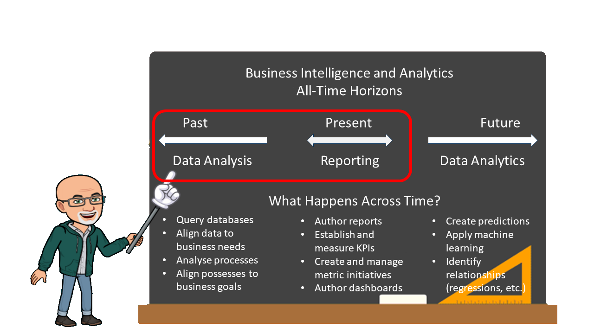
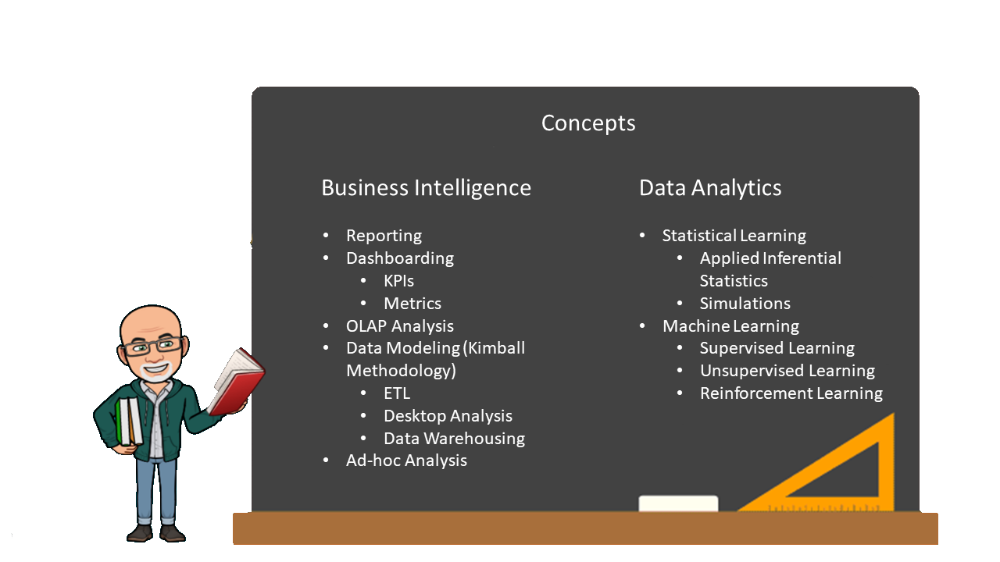
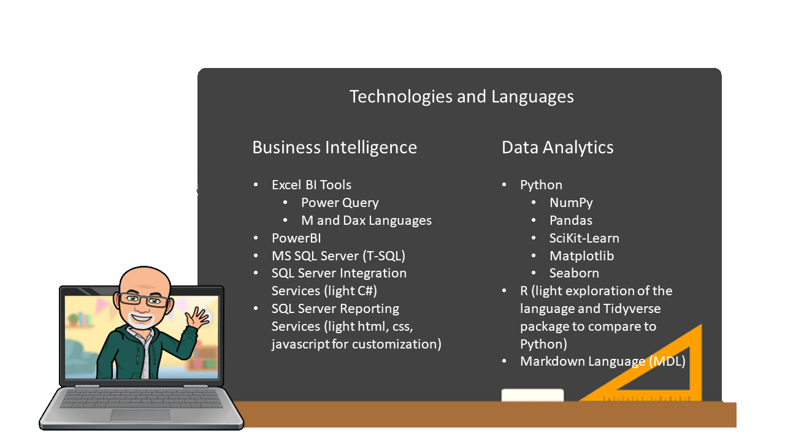

BIA 2021-22 Cohort¶
This will be the fifth cohort to participate in Nova Scotia’s Community College BIA program. For those of you considering or have already been accepted to the program, Welcome!
The number of buzzwords that surround our industry can make it a bit difficult to understand the many opportunities it affords. Even the name of our program at NSCC can be a bit confusing, BIA or Business Intelligence Analytics really encompasses two broad areas of the Data Science spectrum. This site will introduce you to the scope of the program and some of the technologies you will be learning during the year.
There will also be a page I will keep updated to help you prepare for your course prior to classes beginning in September.
Quick Intro and Courses¶
My name is Patrick Dolinger and I will be your instructor for the majority of your courses. I am assigned to teach all of the courses in the program except for Business Analysis Essentials and Ethics and Law in Data Analytics. I find it exciting to teach BI and Analytics as I have over 20 years experience in the analytics field. Prior to my first analytics experience I was a software developer for Microsoft. Part of what make analytics such an interesting field is that people come into from a variety of backgrounds, technical, statistical, business, engineering, and more. Since the program covers a lot of ground in a short time, I have structured the courses in a modular delivery fashion. This ensures you will take no more than two technical courses concurrently. Modular design allows you time to focus on the skills needed and to build upon them in each course.
The courses I teach by semester are as follows:
Fall Semester |
Winter Semester |
|---|---|
Intro to BI |
Data Provisioning (ETL) |
Special Topics (SQL) |
Statistical Learning |
Data Reporting |
Applied Data Analytics |
Database Design |
Capstone Project |
I look forward to seeing you in class!
What is BIA?¶
So, now for the program name. Business Intelligence Analytics should probably be renamed to Business Intelligence and Analytics. There is a temporal range between the two disciplines. I like to refer to this as “All-Time Horizons”. Both BI and Analytics use and are about data! We just work with the data using different strategies, tools, and objectives often with the same datasets. The difference is really what we are looking for in the data.
If we are looking at historical data, this is Business Intelligence, sometimes you will also hear this called data mining. If we are looking at monitoring and measuring how we are doing today (in the present) that is also BI. We deliver this information through dashboards, scorecards, and reports.
Data Analytics is where we forecast and / or predict outcomes. That is why it is considered a “future” operation on the data.
In the diagram below, you will note the red box represents what we are calling Business Intelligence or BI for short.

Business Intelligence and Analytics Concepts¶
Now that we understand the differences between Business Intelligence and Analytics, let’s look at the concepts we will cover that apply at place in the all-time horizons. The industry is flooded with vendors and tools that perform the same operations and functions on the data. Just like there are many automobile manufactures, they are as many (or possibly more) software vendors in the Business Intelligence and Analytics space. My best advice to anyone new to the technical world is my same advice to any new aspiring analyst.
Learn one tool especially well for each thing you are attempting to accomplish. Focus on the concepts and not the tools. Once you have a firm understanding of the concepts, you can pick up any toolset in short order.

Technologies and Languages¶
Even though the importance in learning should be on the concepts and not the tools, we still need to use tools in our learning! I have picked the core tools we will be using in class based on what the industry calls for. Obviously, Nova Scotia business demands are a priority with national trends being evaluated also. Below is a table showing why I have chosen the tools we will be using. Technology changes frequently and there could be minor changes as next year progresses. For example, up until this year I have been teaching the Statistical Learning course using the R program language. Due to the increased demand for analysts to be exposed to the libraries available in Python, we will using Python this year covering the same concepts as we had previously in R.
Technology |
Reason Chosen |
|---|---|
Power Query and PowerBI |
Beginning to lead in industry, popular in Nova Scotia |
MS SQL Server |
The most used RDBMS for data warehouses / marts |
SSRS and SSIS |
Commonly used in NS for standard reporting and ETL |
Python |
In demand more so than R currently in Nova Scotia |

Prep and Links¶
Many students ask what they should brush up on before starting the program. In a nutshell, I would recommend you make sure you are comfortable with advanced worksheet operations in Excel. This would include pivot tables, lookups (i.e. v-lookups), built-in functions, and data tables. Reviewing the statistical package in Excel as well as reviewing inferential statistics is a good idea as well for when get into statistical learning.
The pre-requisite course you take will focus just on MS Access and talk about table and type structures. I would also recommend you explore an open source database like SQLite.
I will add more links as I find them:
W3 Schools SQL - an excellent intro to the base SQL skills.
SQLite and SQLite browser - my favourite database! I taught intro to databases and had my students use this for the course, most kept the database on a USB drive on their keychains.
NSCC has an agreement with LinkedIn Learning. With Technology changing as fast as it does, traditional textbooks cannot keep up. Using videos in lieu of text reading assignments helps with the fast-changing technical landscape. You can access LinkedIn Learning free of charge with your NSCC account and password.
Some courses that could help with course prep are as follows:
Statistics Foundations: The Basics - Eddie is a great instructor. This is a great 1st Statistics Course. If you enjoy this course, you can look up Eddie’s 3-part course on inferential statistics.
Excel Statistics Essential Training: 1 Joseph Schmuller is a renowned author. He comes across a bit dry as an instructor, but does he ever know how to extend Excel into inferential statistics. It’s worth a watch.
Excel Statistics Training: 2 If you like Joseph’s part 1 of the series, here is part 2.
Learning SQL Programming If it were my choice, I would use this database (SQLite Browser) and this course to teach an “Intro to Databases” course.